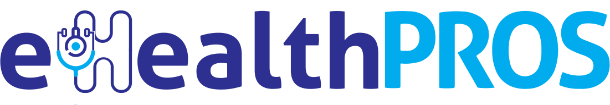

Partner Dashboard
Partner Dashboard is an essential collection mechanism and repository of information critical to understanding and adjusting workloads and resources in operations. Partner Dashboard is also evolving into an interactive program. Visitors who check for scheduled appointments or walk-in for other business are placed into a queue and employees are notified they are present.
VisitorPROS
MindPROS developed a employee and visitor check-in application for mobile and desktop. The application provides automated check-in, customized visitor experience, notifications to the employees when the visitor arrives by accessing active directory.

eHealthPROS
MindPROS developed a more comprehensive patient’s overall health application which include the medical records of the patients. The EHR software is a computer system that helps healthcare providers manage patient medical records and automate clinical workflows. EHR systems allow providers to create customizable templates for taking notes during patient encounters.
eDataPROS
MindPROS has developed this next generation multi tenant hadoop based batch processing system that is responsible for collecting and mining billions of events on a daily basis. The metrics generated are used for BI, Behavioral and pattern targeting.
eSchoolPROS
MindPROS developed a cloud-based K-12 school administrative software that is easy-to-use. The software includes school pupil Attendance, Scheduling, Grading, Report Cards, Discipline, Online Forms, Billing, Accounting, Web Portals, Mobile Apps, Library, Admissions with Online Applications and Forms, and much more.